Vodii (Flueid)
At Vodii I was the designer, the front-end, and the project manager. TxM handled real estate documents on a stack that couldn’t take new work. I audited what we could keep, rebuilt the rest, and implemented the production front-end.

At Vodii I was the designer, the front-end, and the project manager. TxM handled real estate documents on a stack that couldn’t take new work. I audited what we could keep, rebuilt the rest, and implemented the production front-end.
I was the only designer (two of us after Flueid bought Vodii). I also ran the timeline and made technical calls. That’s the job when the team is that small.
First pass was an audit: what could we keep inside the old framework, and what had to be rebuilt. Then a modular architecture — reusable components so the next feature didn’t mean another rewrite.
Working alone is fast until you pick the wrong thing. I kept the first release to signing, sharing, and tracking, and left room in the system for what came next.
New UI, yes — but the useful part was the structure. Common document tasks took fewer steps.
Because I was writing the production front-end, the file and the browser didn’t drift apart. Later people could touch one feature without untangling the whole thing.
After Flueid acquired Vodii, this was still the base.
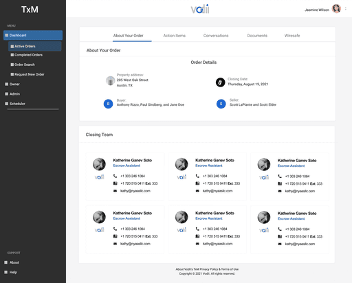
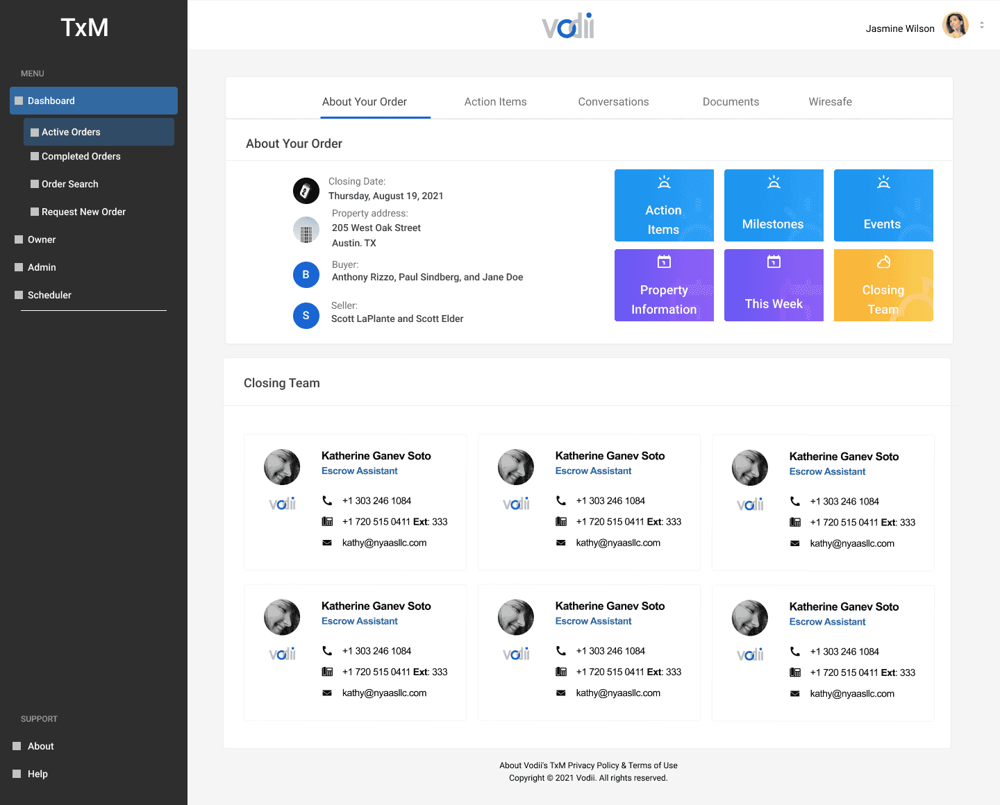
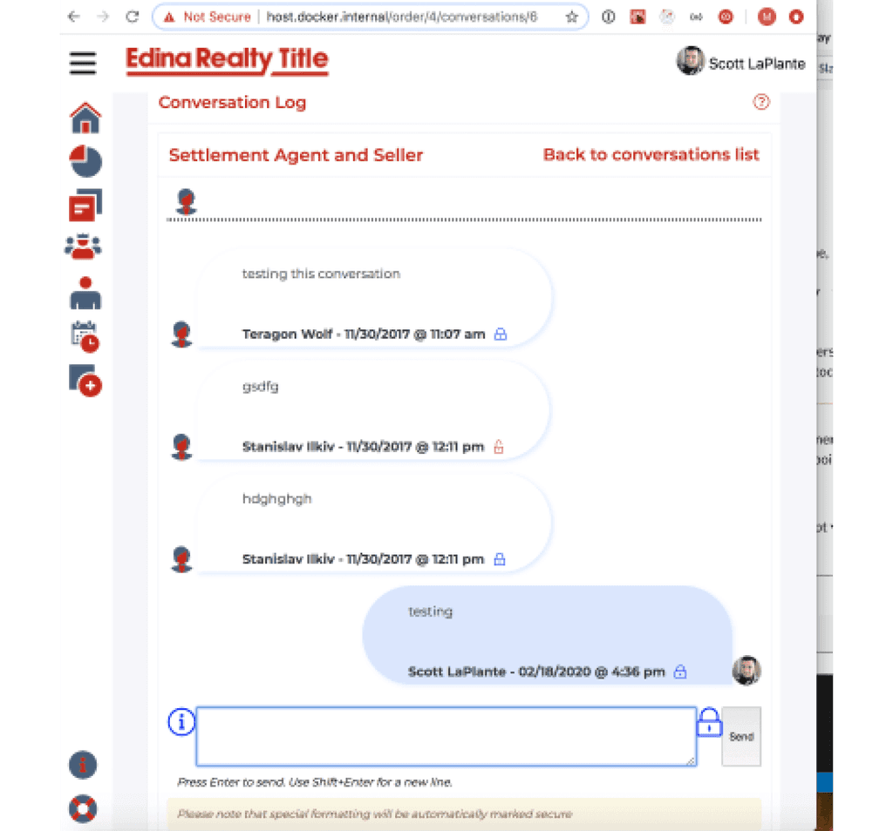
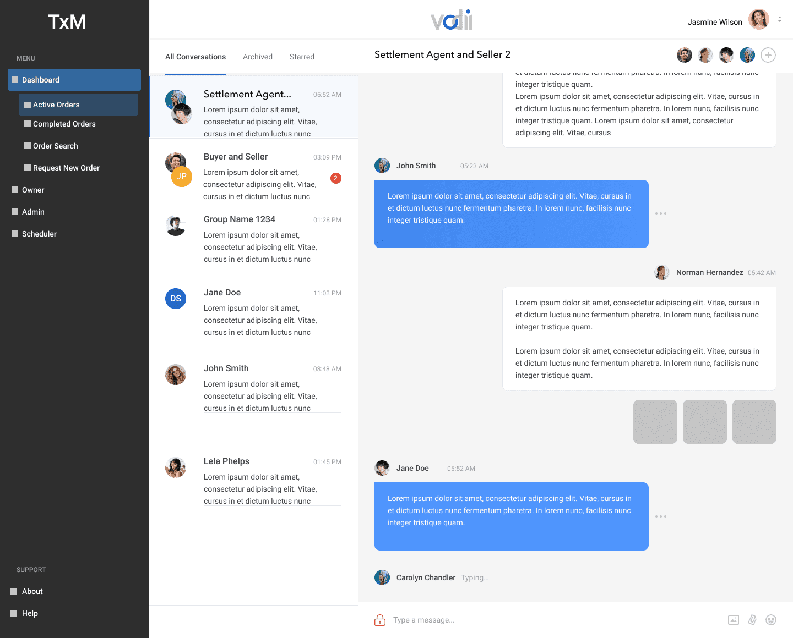
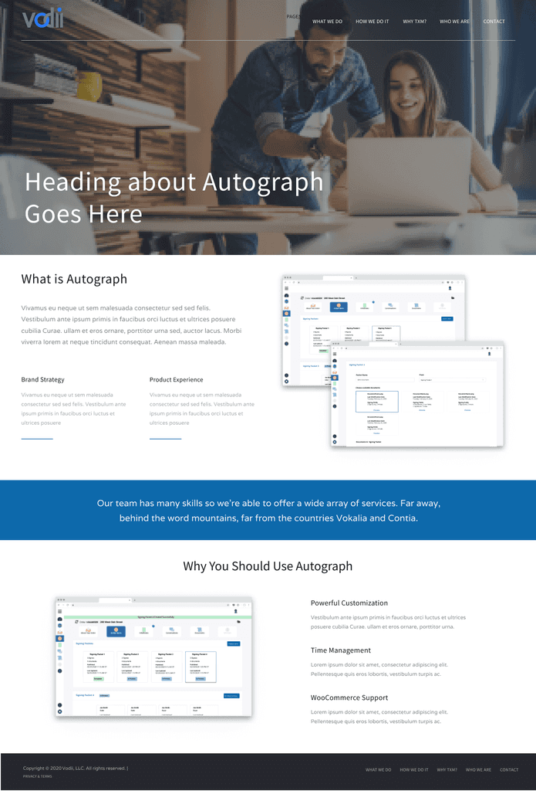
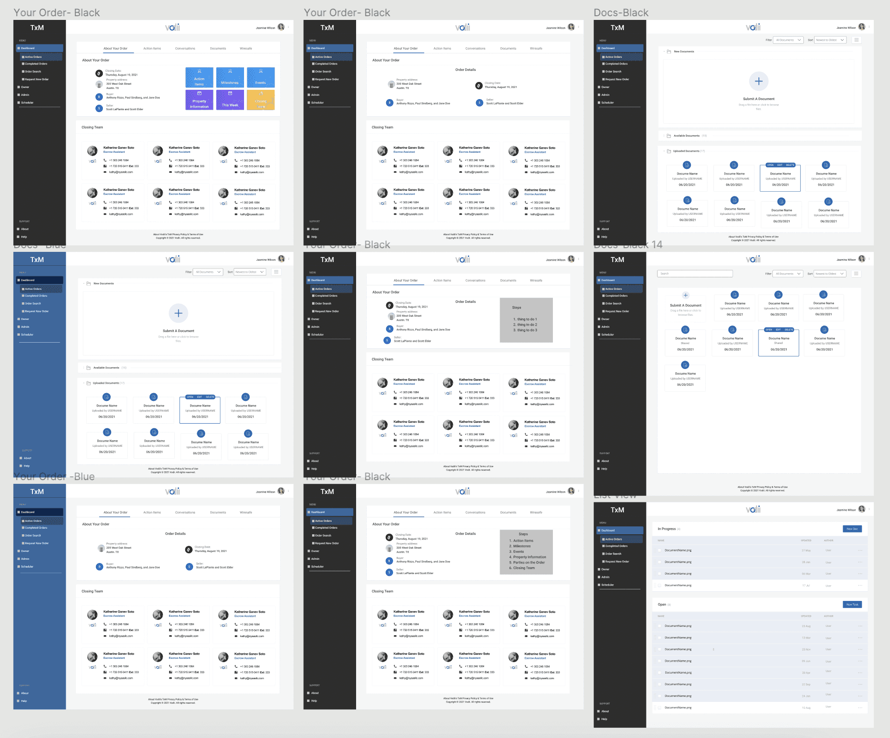
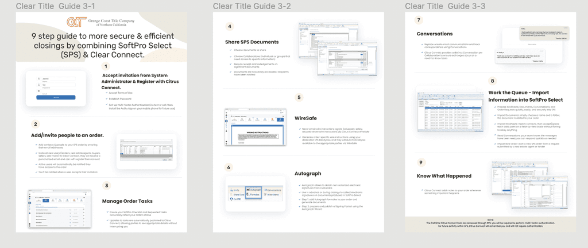
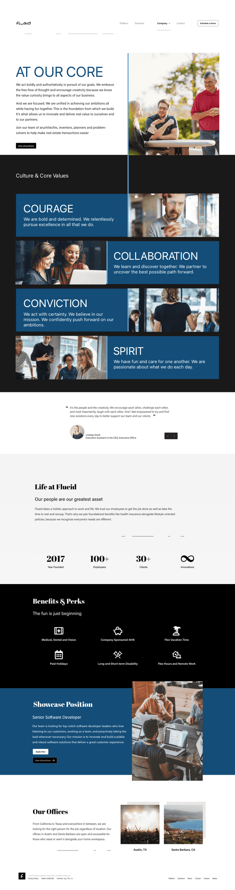
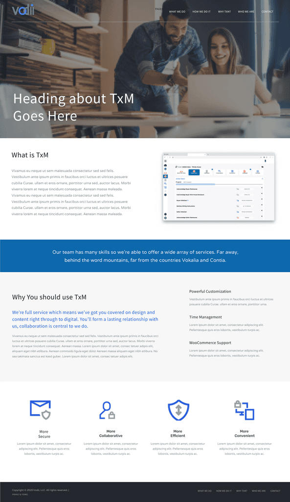
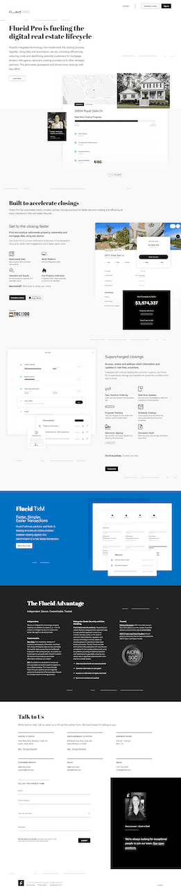
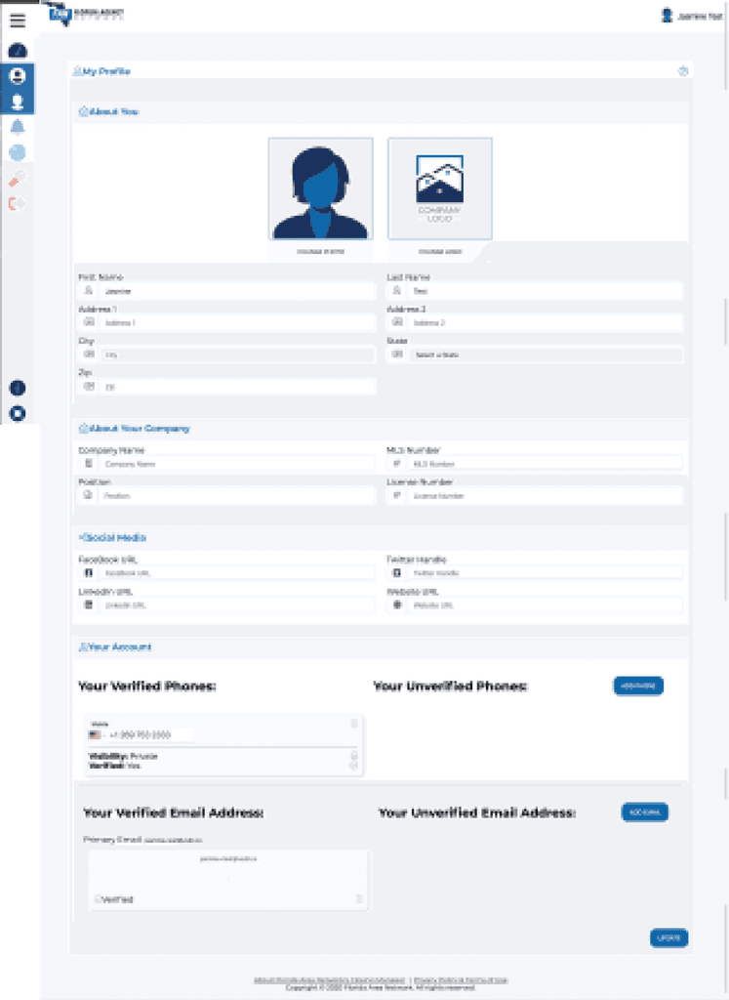
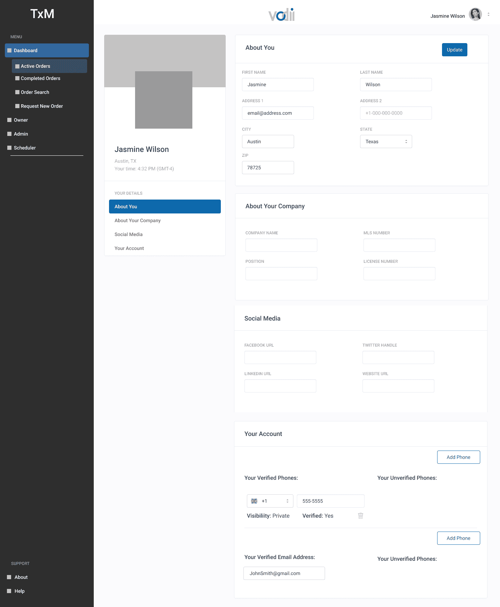